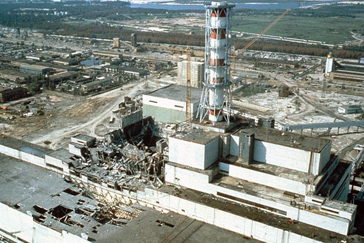

Chernobyl disaster-1986

The Chernobyl disaster was a nuclear accident that occurred on Saturday 26 April 1986, at the No. 4 reactor in the Chernobyl Nuclear Power Plant, near the city of Pripyat in the north of the Ukrainian SSR in the Soviet Union.